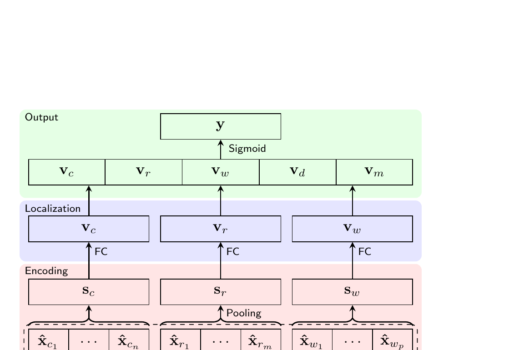

SECOVARC, a simple three-part neural architecture that uses contextualized word vectors from machine translation pre-training (CoVe) for argument reasoning comprehension, demonstrating the effectiveness of transfer learning for this challenging logical reasoning task.

The Argument Reasoning Comprehension Task (Habernal et al., 2018) is a newly released task at SemEval 2018 that tackles the core of reasoning in natural language argumentation: identifying implicit warrants. Given a claim and a reason, the model must choose the correct implicit warrant from two candidates that logically connects them. The dataset consists of about 2K crowdsourced instances, each with a title and short description of the debate from which the claim, reason, and two candidate warrants arose.
This task is challenging from multiple perspectives:
Core Idea: Rather than designing a complex architecture, the authors hypothesize that transfer learning can remedy the data scarcity problem. By leveraging a Bi-LSTM encoder pre-trained on large-scale machine translation (MT) data, the model obtains meaningful contextualized sentence representations that would not be achievable when training from scratch on only 2K examples. This keeps the model architecture deliberately simple while benefiting from knowledge transferred from millions of MT sentence pairs.
SECOVARC (Sentence Encoder with COnextualized Vectors for Argument Reasoning Comprehension) takes a set of three sentences -- a claim, reason, and warrant -- as input and outputs a score between 0 and 1, indicating how reasonable the claim is when it is based on the reason and the warrant. The architecture is composed of three layers:
Two important decisions shaped the model design. First, the model accepts only one warrant at a time (not both candidates together), based on the intuition that the model should learn to judge whether a (claim, reason, warrant) triple is plausible, rather than just choosing between two warrants. Second, the architecture is kept as simple as possible -- no attention mechanisms -- to avoid overfitting on the limited training data, relying instead on transfer learning for representational power.
Since the model accepts only one warrant at a time, the training data is preprocessed so that the correct warrant receives a score of 1 and the incorrect one receives 0, effectively doubling the training set. At test time, both warrants are scored independently -- y1 = SECOVARC(c, r, w1) and y2 = SECOVARC(c, r, w2) -- and the warrant with the higher score is selected.
Hyperparameters: Word embedding dimension de = 300 (840B GloVe), sentence representation dimension ds = 600, localized dimension df = 300. Optimizer: Adam with learning rate 0.001. Batch size: 64. Maximum epochs: 10 (best model selected on dev accuracy). Regularization: L2 weight decay (1e-5) + Dropout (p = 0.1). All parameters including word vectors are fine-tuned during training. Non-CoVe weights initialized from Uniform(-0.005, 0.005); biases initialized to 0.
Evaluated on the SemEval-2018 Task 12 dataset (~2K crowdsourced instances). Due to the instability of results caused by random initialization, all results are reported as mean and standard deviation over 20 experimental runs with the same hyperparameters.
| Model | Dev Acc. (±) | Test Acc. (±) |
|---|---|---|
| Human average | - | 0.798 (±0.162) |
| Human w/ training in reasoning | - | 0.909 (±0.114) |
| Random baseline | 0.473 (±0.039) | 0.491 (±0.031) |
| Language model | 0.617 | 0.500 |
| Attention | 0.488 (±0.006) | 0.513 (±0.012) |
| Attention w/ context | 0.502 (±0.031) | 0.512 (±0.014) |
| Intra-warrant attention | 0.638 (±0.024) | 0.556 (±0.016) |
| Intra-warrant attention w/ context | 0.637 (±0.040) | 0.560 (±0.055) |
| SECOVARC (official submission) | 0.731 | 0.565 |
| SECOVARC-last (w/o heuristics) | 0.701 (±0.011) | 0.559 (±0.019) |
| SECOVARC-last (w/ heuristics) | 0.706 (±0.014) | 0.554 (±0.015) |
| SECOVARC-max (w/o heuristics) | 0.680 (±0.007) | 0.591 (±0.016) |
| SECOVARC-max (w/ heuristics) | 0.684 (±0.008) | 0.592 (±0.016) |
To verify whether pre-trained CoVe encoders are genuinely responsible for the gains, additional experiments compare SECOVARC against non-transferred counterparts with identical architectures but randomly initialized Bi-LSTMs:
| Model | Dev Acc. (±) | Test Acc. (±) |
|---|---|---|
| BoW (avg. of word vectors) | 0.677 (±0.006) | 0.502 (±0.014) |
| Bi-LSTM-last (random init) | 0.678 (±0.010) | 0.554 (±0.024) |
| Bi-LSTM-max (random init) | 0.670 (±0.011) | 0.543 (±0.027) |
| SECOVARC-last (CoVe) | 0.706 (±0.014) | 0.554 (±0.015) |
| SECOVARC-max (CoVe) | 0.684 (±0.008) | 0.592 (±0.016) |
This work is an early and influential demonstration that transfer learning from machine translation can substantially improve performance on reasoning tasks with limited training data. Published at SemEval 2018 (co-located with NAACL-HLT 2018), the paper appeared at a pivotal moment -- just before ELMo (Peters et al., 2018) and BERT would transform the field -- and provided concrete evidence that pre-trained contextualized representations are essential for natural language understanding tasks requiring logical reasoning.
The deliberate simplicity of the SECOVARC architecture carries an important lesson: when training data is scarce, investing in better representations (via transfer learning) is more effective than adding architectural complexity. This principle has since been validated at massive scale with the pre-train-then-fine-tune paradigm that dominates modern NLP.
Future Directions (noted in the paper): The authors suggest replacing CoVe with more powerful contemporary sentence encoders such as those from Subramanian et al. (2018) or ELMo (Peters et al., 2018), as well as exploring data augmentation through sophisticated rules or heuristics to further expand the limited training set.